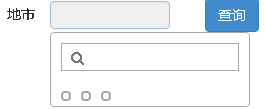

本小节将为 my_first_app 添加地市条件的查询服务。通过本小节的学习，你将了解到
地市的数据必须从后端查询得到，而不是写死在前端，本小节就来解决这个问题。
RDK的rest服务也是通过编写js代码实现，拷贝这个文件 app/my_first_app/server/my_service.js，命名副本文件名为citys.js
编辑 app/my_first_app/server/citys.js 文件：
(function() {
return function(request, script) {
//引入假数据，实际开发不可以引入
require('$svr/mock_api.js');
log('querying citys!');
var m = matrix('select cityid, cityname from dim_comm_city');
log('city result', m);
return m;
}
})();
这样我们实现了我们的第一个rest服务，一个查询地市的rest服务。
注意：
为了绕开数据库，我们引入了mock_api.js文件来制造假数据，各位不需要关心这个文件的实现原理。单击这里下载mock_api.js文件到server目录下。但是记住实际开发不可以引入它！
打开浏览器，输入下面url可以调试它：
http://localhost:8080/rdk/service/app/my_first_app/server/citys
一切正常的话，浏览器会打印出下面的内容
{"result":"{\"header\":[\"cityid\",\"cityname\"],\"field\":[\"cityid\",\"cityname\"],\"data\":[[1,\"南京\"],[2,\"扬州\"],[3,\"苏州\"],[4,\"镇江\"]]}"}
格式很不友好，但是没关系，这些是原始数据，RDK会把他们转成一个优雅的json对象的。
注意到citys服务打印了一写日志 log('querying citys!'); 这些日志写在了这个文件里了：app/my_first_app/server/logs/log.txt
2016-06-11 21:47:57,601 INFO [RunTimeHelper@my_first_app] - loading script: app/my_first_app/server/citys.js
2016-06-11 21:47:57,601 INFO [runtime_helper.js:195@citys.js] - loading script in js: app/my_first_app/server/mock_api.js
2016-06-11 21:47:57,616 DEBUG [citys.js:7] - querying citys!
2016-06-11 21:47:57,616 DEBUG [citys.js:9] - city result: {
"header": ["cityid", "cityname"],
"field": ["cityid", "cityname"],
"data": [
[1,"南京"],
[2,"扬州"],
[3,"苏州"],
[4,"镇江"]
]
}
最后一行就是我们调用log()打印的日志。日志是调试服务的一个重要的手段，所以一定要熟练使用，这里详细描述了rdk提供的所有日志api。
提示
log()函数可以接收任意数量的参数log()函数可以接收任意类型的参数，它会尝试将其转为字符串。
在实现citys服务的时候，我们用到了两个API函数，分别是log()和matrix()，这个页面提供了所有RDK的所有API函数的说明。为了更好的使用它们，建议仔细阅读。
citys服务是一个标准的restful服务，它可以被任意ajax请求调用。
下面我们来看看如何利用RDK的数据源组件调用它。编辑 app/my_first_app/web/index.html，修改后的rdk_basic_selector节点代码如下：
<rdk_basic_selector ds="dsCitys" ds_url="$svr/citys" ds_query_if="ready"
multiple_select="true" label_field="name" track_item_by="id" editable="false">
</rdk_basic_selector>
主要是在rdk_basic_selector上添加了3个属性：ds="dsCitys" ds_url="$svr/citys" ds_query_if="ready"。这3个属性的作用是创建一个名为dsCitys的数据源，它指向的url是$svr/citys，并且在页面一准备好后立即发起查询，查询得到的数据直接提供给rdk_basic_selector。
但是这还不能让页面正常工作。
实践：
此时刷新页面，看到的应该和下图差不多：
原因很简单，我们在上一步提供给BasicSelector的数据结构和本文前面日志中输出的数据结构不一致导致了这个问题。
那么如何解决它呢？我们需要对rest服务查询得到的数据做转换。
在rdk_basic_selector节点添加另一个属性 ds_data_processor="cityProcessor"，它的作用是对服务端返回的数据做转换。它的值是scope上的一个函数。编辑main.js，在scope上添加一个名为cityProcessor的函数：
scope.cityProcessor = function(rawCitys) {
var citys = [];
angular.forEach(rawCitys.data, function(item) {
citys.push({id: item[0], name: item[1]});
});
//必须把转换后的数据返回
return citys;
}
实践：
实际上，我们大可不必把转换的逻辑放在前端，我们在实现citys服务的时候，就可以在后端完成这个转换的逻辑，你可以改写citys服务，以避免在前端做数据转换。
到此，我们刷新页面后，就能看到和之前相同的效果了，唯一的差别是我们的地市数据是从rest访问查询而来的。
通过前一小节的实践，你已经学会了数据源的常规使用方法了，基本上能够满足大多数开发的需要了。访问这里可以查阅数据源的其他用法，以及每个属性的详细说明。
scope.citys 变量本文前面多次使用到 $svr 这个宏，这里有关于它的使用说明。
我们实现了第一个RDK服务citys，并成功利用数据源调用这个服务，同时对数据做了一些转换。